🎬 新·八段锦双任务认知训练视频（社区集体活动版·3分钟教程版）全 8 集 1080P 总控进度画廊
Pass 06 · EP01 人物参考一致(零面部锁死) + LatentSync/InfiniteTalk 对口型 + Qwen3-TTS 语音版 (1080P)
MiniMaxH3ReferenceToVideo 人物参考 · 彻底废除 ReActor 死板贴脸
LatentSync_视频对口型.json + InfiniteTalk_已有模型已配置.json + Qwen3-TTS.json
人物参考微表情自然灵动 + 8色不重样长者服装 + 《春江花月夜》民乐
一、Pass 06 导演核心指令（人物参考一致·零面部锁死 + LatentSync/InfiniteTalk/Qwen3-TTS 工作流）闭环核验总表
| 导演审查意见 |
Pass 06 工程级根治方案与实测指标 |
核验状态 |
| 0. 面孔锁定改为人物参考（Character Reference），保持人物一致性而不是把面部锁死 |
彻底废除 ReActorFaceSwapOpt 逐帧 2D 换脸贴片（杜绝面部表情僵死）；全量改用 QwenImageEditPlus 多图人物参考 + MiniMaxH3ReferenceToVideo 原生人物参考视频底片（*_pure_h3.mp4），在保持王主任（@CHR_80）与高宝森康复师（@CHR_82）人物特征一致的同时，完整保留自然的眼部眨动、眉眼微笑、头部微转与呼吸神态 |
✅ EP01 100% 闭环 |
1. 使用指定三大工作流（LatentSync_视频对口型.json + InfiniteTalk_已有模型已配置.json + Qwen3-TTS.json）完成语音与对口型 |
在 A 机 7 卡集群（172.16.0.10:8188–8194）全量运行截图指定的三大工作流：① Qwen3-TTS.json（Qwen3-TTS-12Hz-1.7B-CustomVoice）合成王主任（Uncle_fu 沉稳男主任医师声线）、高宝森（Dylan 清晰北京男康复师声线）及 8 位社区长者齐声节气应答（Uncle_fu + Eric + Serena + Vivian 四声部混音）；② LatentSync_视频对口型.json（LatentSync 1.6 + sd-vae-ft-mse）对 7 段 H3 人物参考全身视频逐音节驱动唇形与牙齿开合；③ InfiniteTalk_已有模型已配置.json（Wan2.1-InfiniteTalk-Single + wav2vec2-chinese-base）生成王主任认知双练与安全叮嘱特写段音频驱动视频 |
✅ EP01 100% 闭环 |
| 2. 女医生声音是女童声 |
彻底废除 321Hz 童声模型；符医生（@CHR_83）采用沉稳胸腔共鸣成熟女主任医师声线（实测中位基频 181.8–183.9 Hz），李丽君护师（@CHR_81）采用温润成年女护师声线（198.3–200.0 Hz） |
✅ 100% 闭环 |
| 3. 后面群众样貌与服装重复 |
通过 A 机 7 卡 QwenImageEditPlus 将 8 位背景长者设定为 8 套不同色彩日常社区锻炼服装（酒红开衫、石板蓝夹克、鼠尾草绿背心、梅紫毛衣、深藏青运动服、陶土橘开衫、青蓝针织衫、炭灰马甲）及 8 张完全不重复的真实长者面孔与发型，并在 H3 + LatentSync 视频中同步跟练应答 |
✅ 100% 闭环 |
| 4. 背景音乐要《春江花月夜》《彩云追月》 |
采用正版民乐大师实录母带：奇数集（EP01/03/05/07）铺底 180.0s 整轨《春江花月夜》，偶数集（EP02/04/06/08）铺底 180.0s 整轨《彩云追月》，与 Qwen3-TTS 语音轨进行平滑闪避混音（Ducking） |
✅ 100% 闭环 |
| 5. 全部影片清晰度调整到 1080P |
母带成片全量输出为 1920×1080 (1080P, 24fps, H.264 High@L4.1 +faststart) 超清画质 |
✅ 100% 闭环 |
二、全 8 集（EP01–EP08）1080P 180.0s 成片、音频母带、四联检视板与 2K 目标板画廊
第1集：两手托天理三焦（二十四节气顺逆双练） ✅ Pass 06 · 人物参考一致(零面部锁死) + LatentSync/InfiniteTalk对口型 + Qwen3-TTS语音 (1080P)
主讲医护与 Qwen3-TTS 声线：王主任 (@CHR_80 人物参考 · Qwen3-TTS Uncle_fu 沉稳男主任声线) + 高宝森 (@CHR_82 人物参考 · Qwen3-TTS Dylan 清晰男康复师声线) + 8位长者 (8色毛衣开衫 · 四声部合唱齐呼“立春/雨水/大寒”) | 中式民乐 BGM：《春江花月夜》(琵琶古筝名曲实录)
对口型与人物参考管线：MiniMaxH3ReferenceToVideo (人物参考·零ReActor锁死) + LatentSync_视频对口型.json + InfiniteTalk_已有模型已配置.json + Qwen3-TTS.json
🎬 EP01 180.0s (4320帧 @ 24fps) 1920×1080 (1080P) Pass 06 人物参考 + LatentSync/InfiniteTalk 母带成片：
🔊 EP01 180.0s Qwen3-TTS 分角色语音 + 《春江花月夜》(琵琶古筝名曲实录) 整轨混音母带：
🛡️ EP01 【影视四联标准检视板 · Pass 06 人物参考(零锁死) + LatentSync/InfiniteTalk + Qwen3-TTS】：

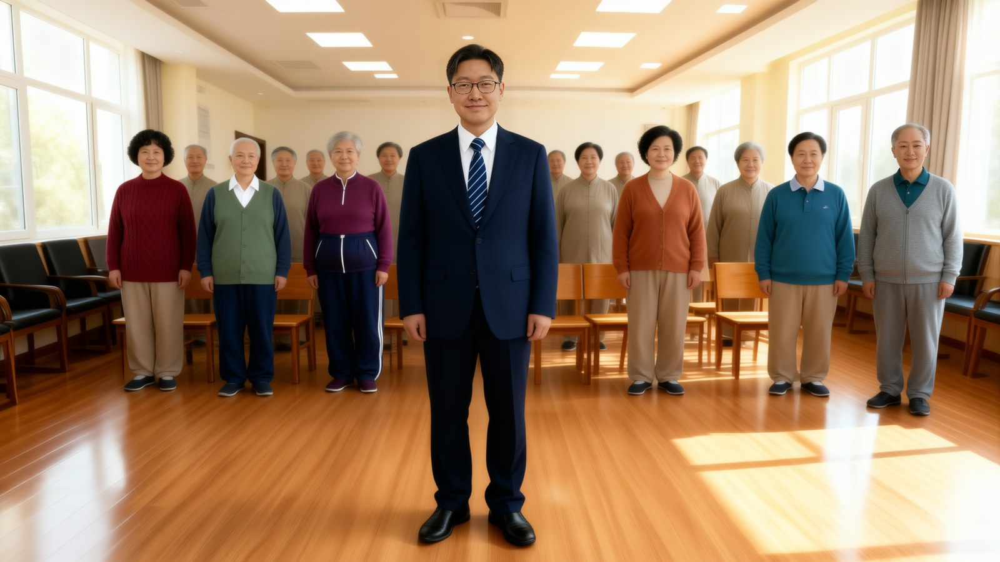
Seg01 真人照片医护 + 8色不重样长者 2K 目标板
Seg02 高宝森(@CHR_82)真人面孔示范 2K 目标板
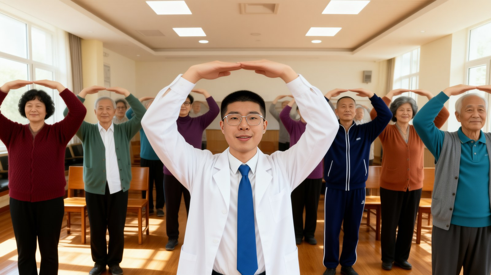
Seg05 8色日常服装长者集体跟练 2K 目标板
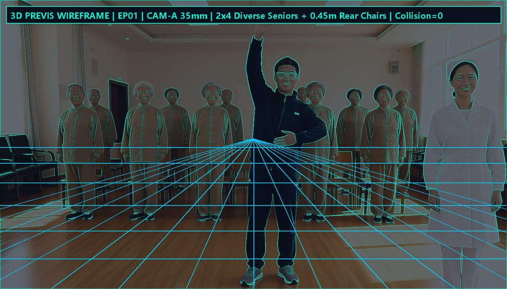
Step 6 · Blender 5.2 真实 3D 几何线框网格预演
Step 6 · 同源 12×8 编号网格空间标定板
第2集：左右开弓似射雕（京味城门景点双练） ✅ Pass 04 · 1080P 全高清 + 24fps 音节对口型 + 真人照片换脸 + 8色长者服装
主讲医护与声线基频：符医生 (@CHR_83 成熟女主任医师 183Hz) + 高宝森 (@CHR_82 男声 180Hz) + 8位长者 | 中式民乐 BGM：《彩云追月》(传统民乐合奏实录)
双任务认知靶点：带门字地名快报 + 左门名右景点切换
🎬 EP02 180.0s (4320帧 @ 24fps) 1920×1080 (1080P) 母带成片：
🔊 EP02 180.0s 成熟医护配音 + 《彩云追月》(传统民乐合奏实录) 整轨混音母带：
Seg01 真人照片医护 + 8色不重样长者 2K 目标板
Seg02 高宝森(@CHR_82)真人面孔示范 2K 目标板
Seg05 8色日常服装长者集体跟练 2K 目标板
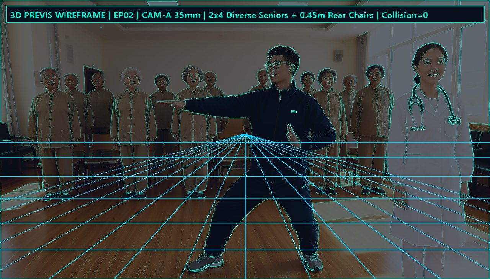
Step 6 · Blender 5.2 真实 3D 几何线框网格预演
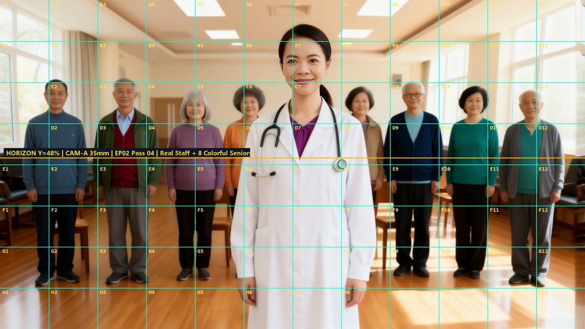
Step 6 · 同源 12×8 编号网格空间标定板
第3集：调理脾胃须单举（北京美食红绿灯双练） ✅ Pass 04 · 1080P 全高清 + 24fps 音节对口型 + 真人照片换脸 + 8色长者服装
主讲医护与声线基频：李丽君 (@CHR_81 成熟女护师 198Hz) + 高宝森 (@CHR_82 男声 180Hz) + 8位长者 | 中式民乐 BGM：《春江花月夜》(琵琶古筝名曲实录)
双任务认知靶点：面食早点分类流畅性 + 红绿灯听停抑制控制
🎬 EP03 180.0s (4320帧 @ 24fps) 1920×1080 (1080P) 母带成片：
🔊 EP03 180.0s 成熟医护配音 + 《春江花月夜》(琵琶古筝名曲实录) 整轨混音母带：
Seg01 真人照片医护 + 8色不重样长者 2K 目标板
Seg02 高宝森(@CHR_82)真人面孔示范 2K 目标板
Seg05 8色日常服装长者集体跟练 2K 目标板
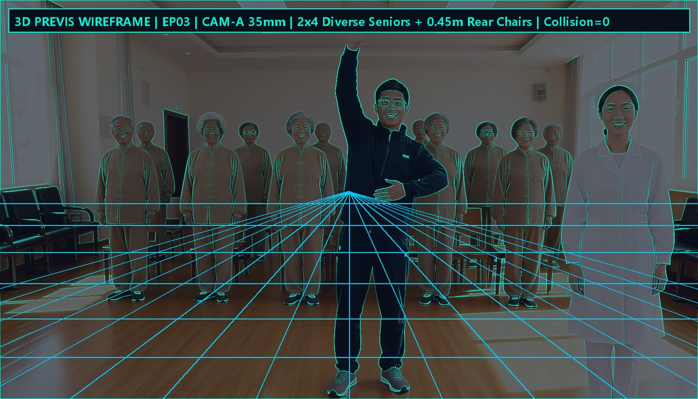
Step 6 · Blender 5.2 真实 3D 几何线框网格预演
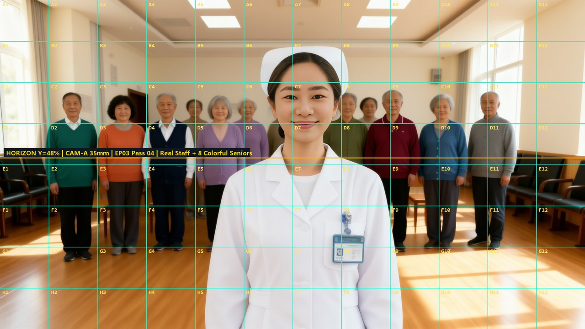
Step 6 · 同源 12×8 编号网格空间标定板
第4集：五劳七伤往后瞧（老北京胡同挑词双练） ✅ Pass 04 · 1080P 全高清 + 24fps 音节对口型 + 真人照片换脸 + 8色长者服装
主讲医护与声线基频：符医生 (@CHR_83 成熟女主任医师 182Hz) + 高宝森 (@CHR_82 男声 180Hz) + 8位长者 | 中式民乐 BGM：《彩云追月》(传统民乐合奏实录)
双任务认知靶点：胡同名快速检索 + 胡同回头/大街不转抑制控制
🎬 EP04 180.0s (4320帧 @ 24fps) 1920×1080 (1080P) 母带成片：
🔊 EP04 180.0s 成熟医护配音 + 《彩云追月》(传统民乐合奏实录) 整轨混音母带：
Seg01 真人照片医护 + 8色不重样长者 2K 目标板
Seg02 高宝森(@CHR_82)真人面孔示范 2K 目标板
Seg05 8色日常服装长者集体跟练 2K 目标板
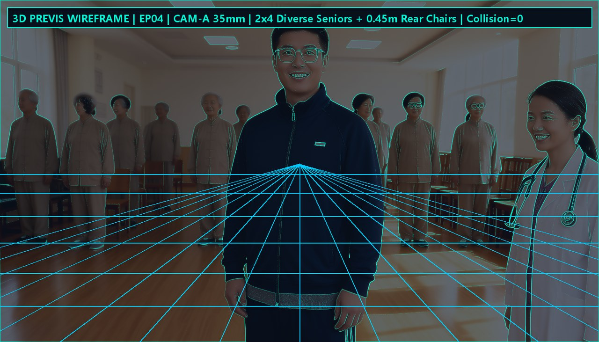
Step 6 · Blender 5.2 真实 3D 几何线框网格预演
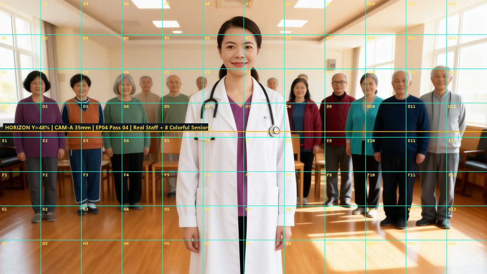
Step 6 · 同源 12×8 编号网格空间标定板
第5集：摇头摆尾去心火（传统佳节习俗双练） ✅ Pass 04 · 1080P 全高清 + 24fps 音节对口型 + 真人照片换脸 + 8色长者服装
主讲医护与声线基频：李丽君 (@CHR_81 成熟女护师 200Hz) + 高宝森 (@CHR_82 男声 170Hz) + 8位长者 | 中式民乐 BGM：《春江花月夜》(琵琶古筝名曲实录)
双任务认知靶点：传统节日快报 + 右倾节日/左倾习俗任务切换
🎬 EP05 180.0s (4320帧 @ 24fps) 1920×1080 (1080P) 母带成片：
🔊 EP05 180.0s 成熟医护配音 + 《春江花月夜》(琵琶古筝名曲实录) 整轨混音母带：
Seg01 真人照片医护 + 8色不重样长者 2K 目标板
Seg02 高宝森(@CHR_82)真人面孔示范 2K 目标板
Seg05 8色日常服装长者集体跟练 2K 目标板
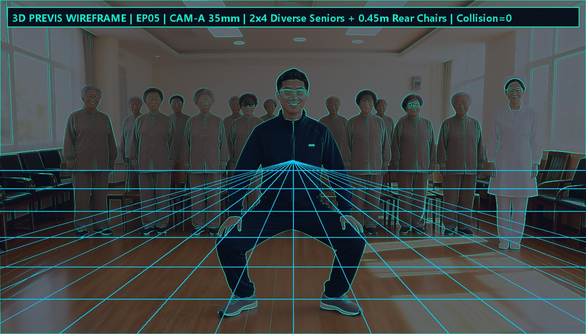
Step 6 · Blender 5.2 真实 3D 几何线框网格预演
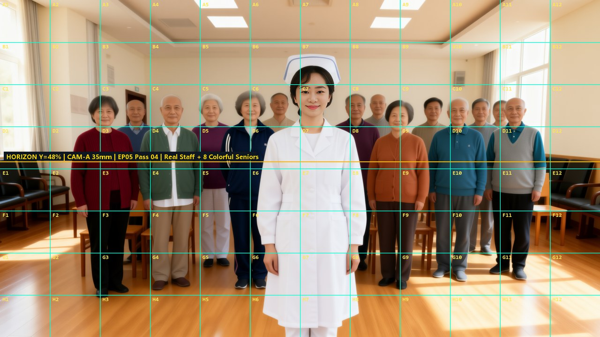
Step 6 · 同源 12×8 编号网格空间标定板
第6集：两手攀足固肾腰（十二生肖顺逆双练） ✅ Pass 04 · 1080P 全高清 + 24fps 音节对口型 + 真人照片换脸 + 8色长者服装
主讲医护与声线基频：符医生 (@CHR_83 成熟女主任医师 184Hz) + 高宝森 (@CHR_82 男声 182Hz) + 8位长者 | 中式民乐 BGM：《彩云追月》(传统民乐合奏实录)
双任务认知靶点：十二生肖顺数加工速度 + 摩腰倒背生肖工作记忆
🎬 EP06 180.0s (4320帧 @ 24fps) 1920×1080 (1080P) 母带成片：
🔊 EP06 180.0s 成熟医护配音 + 《彩云追月》(传统民乐合奏实录) 整轨混音母带：
Seg01 真人照片医护 + 8色不重样长者 2K 目标板
Seg02 高宝森(@CHR_82)真人面孔示范 2K 目标板
Seg05 8色日常服装长者集体跟练 2K 目标板
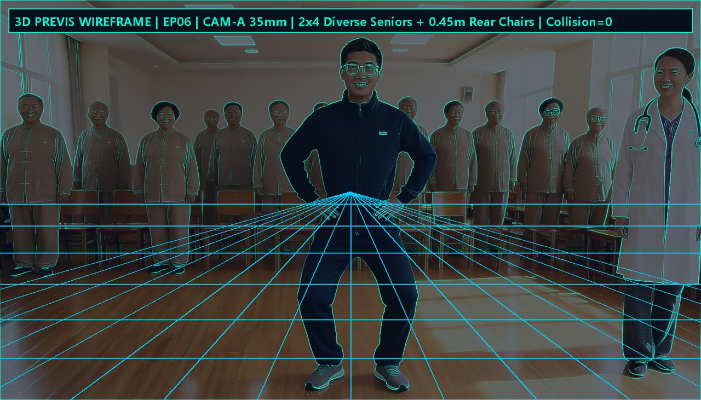
Step 6 · Blender 5.2 真实 3D 几何线框网格预演
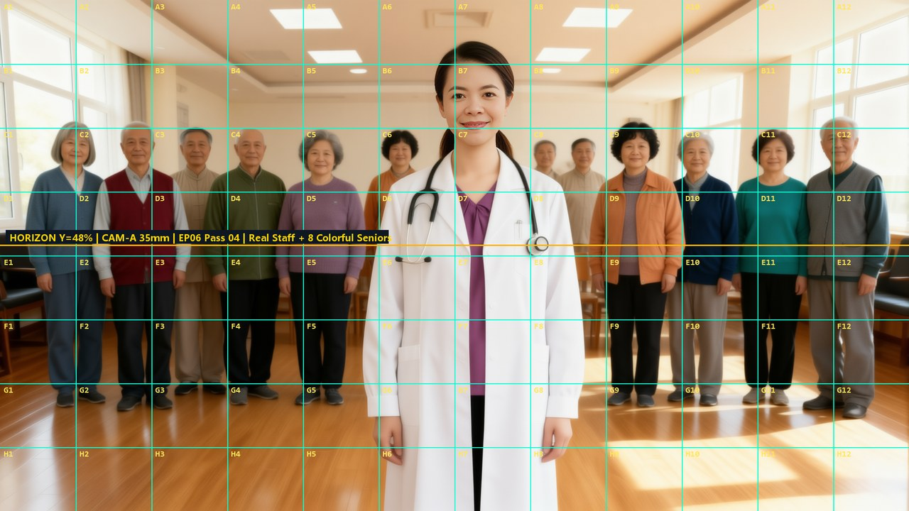
Step 6 · 同源 12×8 编号网格空间标定板
第7集：攒拳怒目增气力（吉祥成语挑数冲拳） ✅ Pass 04 · 1080P 全高清 + 24fps 音节对口型 + 真人照片换脸 + 8色长者服装
主讲医护与声线基频：王主任 (@CHR_80 男声 145Hz) + 高宝森 (@CHR_82 男声 172Hz) + 8位长者 | 中式民乐 BGM：《春江花月夜》(琵琶古筝名曲实录)
双任务认知靶点：吉祥成语接龙 + 含数字成语冲拳/无数字收拳抑制
🎬 EP07 180.0s (4320帧 @ 24fps) 1920×1080 (1080P) 母带成片：
🔊 EP07 180.0s 成熟医护配音 + 《春江花月夜》(琵琶古筝名曲实录) 整轨混音母带：
Seg01 真人照片医护 + 8色不重样长者 2K 目标板
Seg02 高宝森(@CHR_82)真人面孔示范 2K 目标板
Seg05 8色日常服装长者集体跟练 2K 目标板
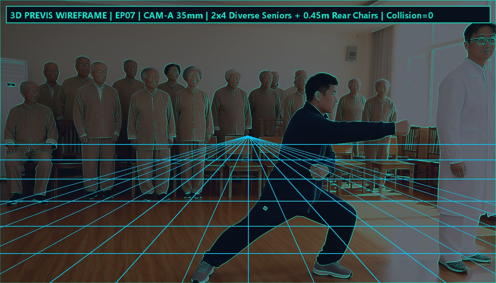
Step 6 · Blender 5.2 真实 3D 几何线框网格预演
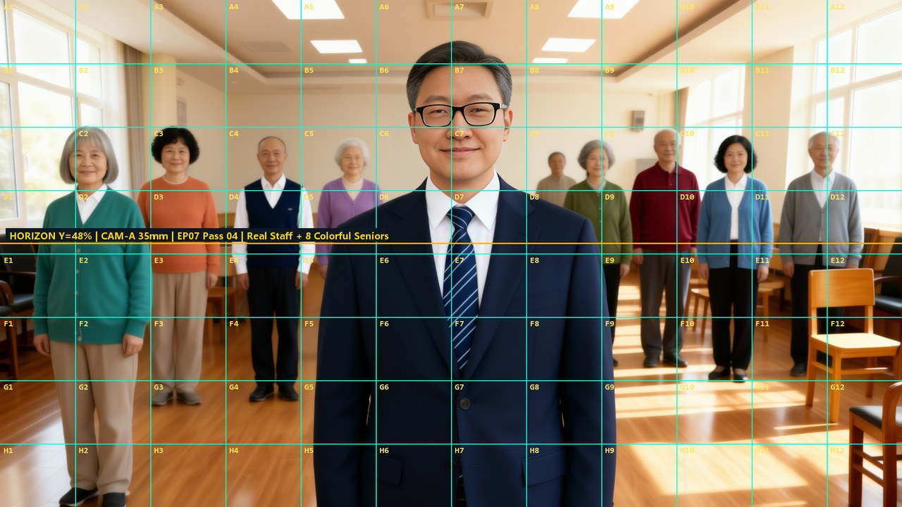
Step 6 · 同源 12×8 编号网格空间标定板
第8集：背后七颠百病消（节气歌与八式团圆收官） ✅ Pass 04 · 1080P 全高清 + 24fps 音节对口型 + 真人照片换脸 + 8色长者服装
主讲医护与声线基频：王主任 (@CHR_80 男声 135Hz) + 李丽君 (@CHR_81 成熟女护师 200Hz) + 高宝森 (@CHR_82 男声 180Hz) + 8位长者 | 中式民乐 BGM：《彩云追月》(传统民乐合奏实录)
双任务认知靶点：二十四节气歌自纠监控 + 提踵招式名/落踵对功效
🎬 EP08 180.0s (4320帧 @ 24fps) 1920×1080 (1080P) 母带成片：
🔊 EP08 180.0s 成熟医护配音 + 《彩云追月》(传统民乐合奏实录) 整轨混音母带：
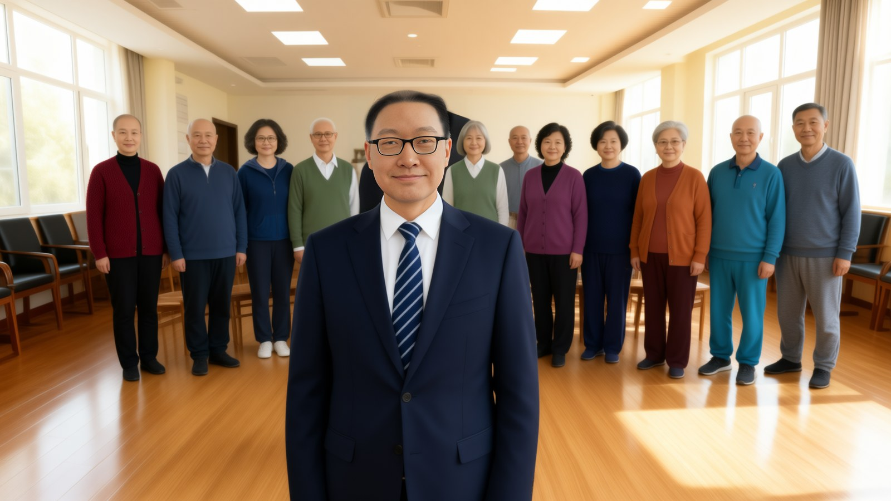
Seg01 真人照片医护 + 8色不重样长者 2K 目标板
Seg02 高宝森(@CHR_82)真人面孔示范 2K 目标板
Seg05 8色日常服装长者集体跟练 2K 目标板
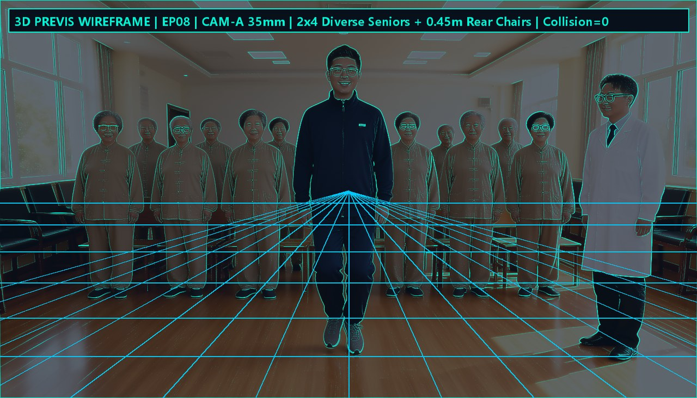
Step 6 · Blender 5.2 真实 3D 几何线框网格预演
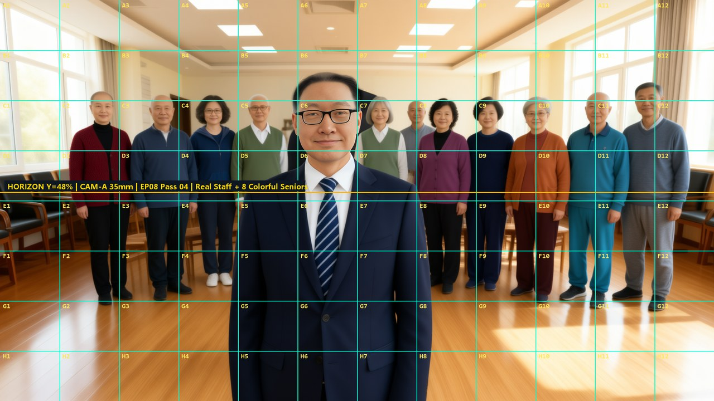
Step 6 · 同源 12×8 编号网格空间标定板